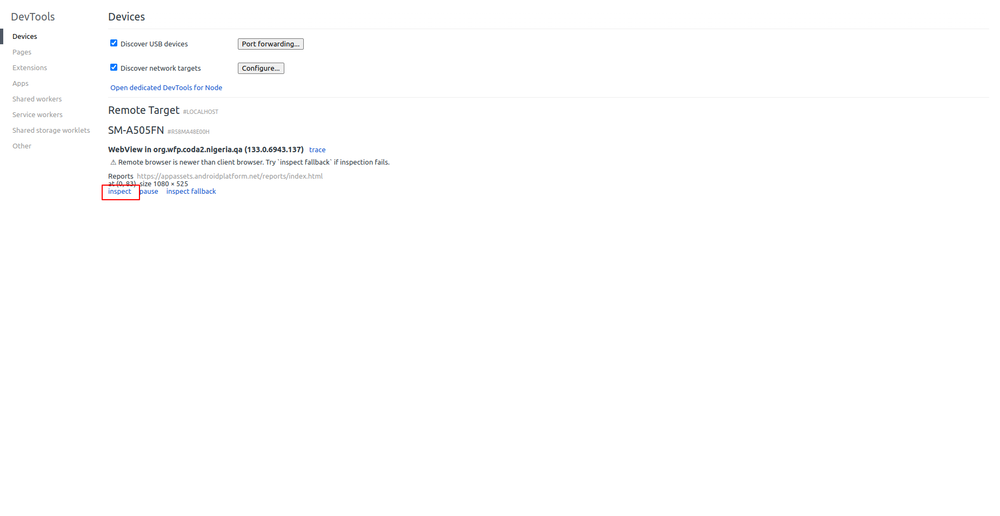

Requirements#
Make sure to have an entity workflow and forms avalaible in Iaso.
You can find the documentation for that in the sections Create forms for entities and Create an entity workflow.
How to run coda mobile report locally#
The current report is based on nutrition programs with beneficiaries split into 2 entity types: - Childen Under 5 - Pregnant and breastfeeding woman
1. Get the code and install the dependencies#
git clone git@github.com:BLSQ/mobile-coda-report.git
cd mobile-coda-report
yarn install
2. Start the local node server#
yarn start
3. Getting json sample data for development#
It requires to have the CODA mobile app debug version installed on your device. The debugging version allows to get sample data.
Connect the device to your computer and run scrcpy command from the terminal#
You can download scrcpy from their GitHub page: [https://github.com/Genymobile/scrcpy].
Then run it:
Either run scrcpy or scrcpy -s <device id> (E.g.: scrcpy -s R58MA48E00H, the device id changes from one device to another)
Open the CODA mobile app on the device, then click the See reports link at the bottom left of your screen to access the mobile report.

In your Chrome browser, enter the following URL: chrome://inspect/, then inspect link:

You should see the same report page as you get on your mobile device
In the browser console, tape:
- Android.loadForms(), copy the content and paste it in the /src/fake/FakeData.ts as FAKE_DATA const content.
Android.currentOrgUnit()copy and paste it in/src/fake/FakeLocalHealthFacility.tsasFAKE_LOCAL_HFconst content. This allow to get data only collected within the org unit level.
Note that getting the data from browser console is possible only for debug version!
4. Exploring the code#
Open the cloned folder with an editor like vscode. You will get the following structure:

5. How to debug#
From the code editor, open the file /src/Android.tsx and check if the sample data are imported in the header like:
import FAKE_DATA from './fake/FakeData';
import FAKE_LOCAL_HF from './fake/FakeLocalHealthFacility';
Within LoadForms() function, comment the existing const:
const formsToLoad and const localHealthFacility
Then add:
const formsToLoad = JSON.parse(FAKE_DATA);
const localHealthFacility = JSON.parse(FAKE_LOCAL_HF);
This is for reading sample(fake) data from your local env.
Then from your browser go to http://127.0.0.1:3000/ or http://localhost:3000
The app reports 2 types of beneficiaries : - Childen Under 5 - Pregnant and breastfeeding woman
To allow you to navigate back inside the report from within your browser, you need to make the back button visible.
In your code editor of choice, open /src/App.tsx, under line 82, replace "hidden" with "visible".
Each sub report is splitted into: - Main - Medical - Followup category - eRegister

6. How to deploy a new report#
The report is deployed on Iaso via the web interface.
1. Prepare the report zip file to deploy#
*/!\ Make sure you have removed the FAKE DATA and made back the back button hidden in /src/App.tsx before you create a zip /!*
yarn run build
cd build/static/css
Cut all content of css folder
cd ../
Paste in the build folder
cd ../js
Cut all content of js folder
cd ../
Paste in the build folder as well
Open the index.html file with your code editor, make sure to have HTML plugin formatter activated then format the content file
In header tag, on:
- line 8, with <script></script> tag, on the src attribute, remove the path /static/js/. Just keep the main css file name.
- line 9, with <link> tag attribute, remove the path /static/css/.
In order to reference the right path, then remove css and js folder as they are empty.
Inside the build/static folder, create the zip file with the whole content by selecting all files then zip.
Provide a name for the zip and let the process finish completely.
2. Upload the zip file#
Login with a super user account (with admin access) to Django admin interface: `/admin``:
- Go to
/admin - Open the
Report versionsmenu - Click on
ADD REPORT VERSION - Fill the Name, Status(make sure to select Published) and upload the zip file
- Save
Then:
- Open the
Reportmenu - Click on
ADD REPORT - Fill the Name, select the right version(created previously) and Project
- Save
3. View report from mobile app#
Open the CODA mobile and Refresh data then Refresh Beneficiaries to download the latest report version.
After refreshing data, your new mobile report is accessible from the bottom left link See reports.